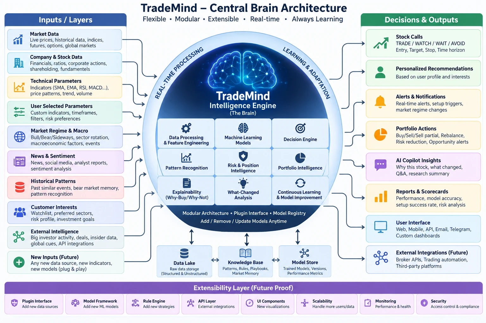

<title>TradeMind Brain Feasibility</title>
<link rel="preconnect" href="https://fonts.googleapis.com">
<link rel="preconnect" href="https://fonts.gstatic.com" crossorigin>
<link rel="stylesheet" href="https://fonts.googleapis.com/css2?family=Inter:wght@400;500;600;700&family=JetBrains+Mono:wght@400;600&display=swap">
<style>
/* Layout: one column with a sticky section bar. Your diagram first, then the
   five answers, then an interactive map of all 39 elements, then blockers,
   success, the build plan, plans and open questions. */
:root {
  --bg: #f4f6fb; --surface: #ffffff; --surface-2: #eef2f9; --border: #d9e0ec;
  --text: #0f1a2e; --dim: #56657f; --accent: #2f6fe4; --pos: #15803d; --neg: #c62828;
  --warn: #b45309; --plan: #7c3aed; --new: #0f766e;
  --font-body: "Inter", system-ui, -apple-system, "Segoe UI", sans-serif;
  --font-mono: "JetBrains Mono", ui-monospace, Consolas, monospace;
}
@media (prefers-color-scheme: dark) {
  :root:not([data-theme="light"]) {
    --bg: #0b1120; --surface: #131c31; --surface-2: #1b2540; --border: #263352;
    --text: #e6edf7; --dim: #8b9bb4; --accent: #4f8cff; --pos: #22c55e; --neg: #ef4444;
    --warn: #f59e0b; --plan: #a78bfa; --new: #2dd4bf; color-scheme: dark;
  }
}
:root[data-theme="dark"] {
  --bg: #0b1120; --surface: #131c31; --surface-2: #1b2540; --border: #263352;
  --text: #e6edf7; --dim: #8b9bb4; --accent: #4f8cff; --pos: #22c55e; --neg: #ef4444;
  --warn: #f59e0b; --plan: #a78bfa; --new: #2dd4bf; color-scheme: dark;
}
* { box-sizing: border-box; }
body { background: var(--bg); color: var(--text); font-family: var(--font-body); font-size: 14px; line-height: 1.55; -webkit-font-smoothing: antialiased; }
h1, h2, h3 { margin: 0; text-wrap: balance; letter-spacing: -0.01em; }
h1 { font-size: 1.5rem; } h2 { font-size: 1.28rem; } h3 { font-size: 1rem; }
p { margin: 0; max-width: 76ch; }
code, .mono { font-family: var(--font-mono); font-size: 0.85em; }
.muted { color: var(--dim); } .small { font-size: 0.85rem; }
.eyebrow { font-size: 0.72rem; font-weight: 600; letter-spacing: 0.08em; text-transform: uppercase; color: var(--dim); }

.top { background: var(--surface); border-bottom: 1px solid var(--border); position: sticky; top: env(safe-area-inset-top, 0px); z-index: 5; }
.top-in { max-width: 1120px; margin: 0 auto; padding-inline: 16px; padding-block: 12px 0; }
.top-in .row { display: flex; flex-wrap: wrap; gap: 4px 12px; align-items: baseline; }
.nav { display: flex; gap: 2px; overflow-x: auto; margin-top: 8px; }
.nav a { color: var(--dim); text-decoration: none; font-size: 0.86rem; font-weight: 500; padding: 7px 10px 9px; border-bottom: 2px solid transparent; white-space: nowrap; }
.nav a:hover { color: var(--text); border-bottom-color: var(--border); }
main { max-width: 1120px; margin: 0 auto; padding-inline: 16px; padding-block: 22px 70px; display: flex; flex-direction: column; gap: 34px; }
section { display: flex; flex-direction: column; gap: 14px; scroll-margin-top: 110px; }

.card { background: var(--surface); border: 1px solid var(--border); border-radius: 10px; padding: 16px; display: flex; flex-direction: column; gap: 8px; min-width: 0; }
.grid { display: grid; gap: 12px; grid-template-columns: repeat(auto-fit, minmax(260px, 1fr)); }
.two { display: grid; gap: 14px; grid-template-columns: repeat(auto-fit, minmax(320px, 1fr)); align-items: start; }
.figure { background: var(--surface); border: 1px solid var(--border); border-radius: 12px; padding: 10px; }
.figure img { display: block; width: 100%; height: auto; border-radius: 8px; }

.answer { border-top: 3px solid var(--accent); }
.answer .q { font-size: 0.8rem; font-weight: 600; color: var(--dim); }
.answer .a { font-size: 1.08rem; font-weight: 700; letter-spacing: -0.01em; }
.answer.good { border-top-color: var(--pos); } .answer.mixed { border-top-color: var(--warn); } .answer.hard { border-top-color: var(--neg); }

.pill { display: inline-flex; align-items: center; border-radius: 999px; font-size: 0.72rem; font-weight: 600; padding: 2px 8px; white-space: nowrap; }
.s-code { color: var(--pos); background: color-mix(in srgb, var(--pos) 13%, transparent); }
.s-planned { color: var(--accent); background: color-mix(in srgb, var(--accent) 13%, transparent); }
.s-new { color: var(--new); background: color-mix(in srgb, var(--new) 15%, transparent); }
.s-legal { color: var(--neg); background: color-mix(in srgb, var(--neg) 12%, transparent); }

.stats { display: grid; gap: 10px; grid-template-columns: repeat(auto-fit, minmax(170px, 1fr)); }
.stat { background: var(--surface); border: 1px solid var(--border); border-radius: 10px; padding: 12px 14px; }
.stat b { display: block; font-size: 1.7rem; font-variant-numeric: tabular-nums; line-height: 1.15; }
.stat span { font-size: 0.8rem; color: var(--dim); }
.stat.code b { color: var(--pos); } .stat.planned b { color: var(--accent); } .stat.new b { color: var(--new); } .stat.legal b { color: var(--neg); }
.bar { display: flex; height: 12px; border-radius: 6px; overflow: hidden; background: var(--surface-2); }
.bar i { display: block; height: 100%; }

/* element map */
.map { display: grid; gap: 12px; grid-template-columns: minmax(0, 1fr) minmax(0, 1.2fr) minmax(0, 1fr); align-items: start; }
@media (max-width: 900px) { .map { grid-template-columns: 1fr; } }
.col { display: flex; flex-direction: column; gap: 8px; min-width: 0; }
.col h3 { font-size: 0.78rem; letter-spacing: 0.08em; text-transform: uppercase; color: var(--dim); padding: 4px 2px; }
.brain { background: var(--surface); border: 2px solid var(--accent); border-radius: 16px; padding: 12px; display: flex; flex-direction: column; gap: 8px; }
.brain .bt { text-align: center; font-weight: 700; color: var(--accent); }
.brain .cells { display: grid; grid-template-columns: repeat(auto-fill, minmax(150px, 1fr)); gap: 8px; }
.el { appearance: none; text-align: left; font: inherit; color: inherit; cursor: pointer; background: var(--surface); border: 1px solid var(--border); border-left: 4px solid var(--border); border-radius: 8px; padding: 8px 10px; display: flex; flex-direction: column; gap: 4px; }
.el:hover { border-color: var(--accent); }
.el[aria-pressed="true"] { outline: 2px solid var(--accent); outline-offset: 1px; }
.el b { font-size: 0.86rem; }
.el.code { border-left-color: var(--pos); } .el.planned { border-left-color: var(--accent); } .el.new { border-left-color: var(--new); } .el.legal { border-left-color: var(--neg); }
.el.dim { opacity: 0.3; }
.stores { display: grid; grid-template-columns: repeat(auto-fit, minmax(150px, 1fr)); gap: 8px; }
.ext { display: grid; grid-template-columns: repeat(auto-fill, minmax(150px, 1fr)); gap: 8px; }
.detail { position: sticky; top: 118px; }
.detail dl { margin: 0; display: grid; grid-template-columns: 110px minmax(0, 1fr); gap: 6px 12px; font-size: 0.88rem; }
.detail dt { color: var(--dim); font-size: 0.8rem; }
.detail dd { margin: 0; }
.filters { display: flex; flex-wrap: wrap; gap: 6px; align-items: center; }
.filters button { appearance: none; font: 500 0.82rem var(--font-body); color: var(--dim); background: var(--surface); border: 1px solid var(--border); border-radius: 999px; padding: 5px 11px; cursor: pointer; }
.filters button[aria-pressed="true"] { color: var(--text); border-color: var(--accent); background: var(--surface-2); }
button:focus-visible, a:focus-visible { outline: 2px solid var(--accent); outline-offset: 2px; }

.tbl-wrap { overflow-x: auto; border: 1px solid var(--border); border-radius: 10px; background: var(--surface); }
table { border-collapse: collapse; width: 100%; font-size: 0.85rem; }
th, td { text-align: left; vertical-align: top; padding: 9px 12px; border-bottom: 1px solid var(--border); }
th { font-size: 0.72rem; letter-spacing: 0.04em; text-transform: uppercase; color: var(--dim); background: var(--surface-2); font-weight: 600; white-space: nowrap; }
tr:last-child td { border-bottom: 0; }
.sev { font-weight: 700; font-size: 0.78rem; }
.sev.h { color: var(--neg); } .sev.m { color: var(--warn); } .sev.l { color: var(--dim); }

.steps { display: grid; gap: 10px; grid-template-columns: repeat(auto-fit, minmax(200px, 1fr)); counter-reset: s; }
.step { background: var(--surface); border: 1px solid var(--border); border-radius: 10px; padding: 12px; display: flex; flex-direction: column; gap: 6px; }
.step .n { font: 700 0.78rem var(--font-mono); color: var(--accent); }
pre.code { margin: 0; font: 0.8rem/1.55 var(--font-mono); background: var(--surface); border: 1px solid var(--border); border-left: 3px solid var(--accent); border-radius: 8px; padding: 12px 14px; overflow-x: auto; white-space: pre; }
.note { border-left: 3px solid var(--warn); background: var(--surface); padding: 10px 14px; border-radius: 0 8px 8px 0; font-size: 0.88rem; }
.q-list { margin: 0; padding-left: 20px; display: flex; flex-direction: column; gap: 10px; }
.q-list li { padding-left: 4px; }
</style>

<header class="top">
  <div class="top-in">
    <div class="row"><h1>TradeMind Brain Feasibility</h1><span class="muted small">Your central-brain picture, checked against the code and the requirements · 29 Sep 2026 · for discussion</span></div>
    <nav class="nav" aria-label="Sections">
      <a href="#answers">Answers</a><a href="#picture">Your picture</a><a href="#map">Element map</a><a href="#blockers">Blockers</a>
      <a href="#success">Success</a><a href="#build">How to build</a><a href="#plans">Free · Plus · Pro</a><a href="#questions">Open questions</a>
    </nav>
  </div>
</header>

<main>

<section id="answers">
  <span class="eyebrow">Your five questions</span>
  <h2>Short answers</h2>
  <div class="grid">
    <div class="card answer good"><span class="q">1 · Possible with current requirements and code?</span><span class="a">Yes. 35 of 39 elements are in code or already in the requirements.</span><p class="small">23 exist in code at least in part, 12 are planned, 2 are new gaps we can add, and 2 need legal permission first. The brain is mostly a way of <b>organising</b> what's planned around one centre.</p></div>
    <div class="card answer hard"><span class="q">2 · Any blockers?</span><span class="a">Three big ones, none technical.</span><p class="small">No proven profit after costs yet; SEBI registration and licensed data before any public user; and personal advice or automated trading for users is regulated. Details under Blockers.</p></div>
    <div class="card answer mixed"><span class="q">3 · How much success, in percent?</span><span class="a">Build: about 90%. Profit: not knowable yet.</span><p class="small">Building the picture is very likely. Whether the brain makes money after costs is decided by evidence in Months 1–3, not by the architecture. I won't invent that number.</p></div>
    <div class="card answer good"><span class="q">4 · Brain first, then inputs and outputs?</span><span class="a">Contracts first, then wrap today's engine, then add one plug-in at a time.</span><p class="small">Don't build nine empty boxes. Define how inputs, models, rules and outputs plug in, move today's working code into that shape, and grow it piece by piece.</p></div>
    <div class="card answer good"><span class="q">5 · Free, Plus, Pro possible?</span><span class="a">Yes, and easier with a central brain.</span><p class="small">The brain decides once for everyone; plans only change which outputs a user sees. One brain, three views.</p></div>
  </div>
</section>

<section id="picture">
  <span class="eyebrow">Your picture</span>
  <h2>TradeMind · Central Brain Architecture</h2>
  <div class="figure"></div>
  <p class="small muted">Your diagram, kept as the target picture. The map below checks each of its boxes.</p>
</section>

<section id="map">
  <span class="eyebrow">Element map · click any box</span>
  <h2>Every box in your picture, checked</h2>
  <div class="stats" id="stats"></div>
  <div class="bar" id="bar" aria-hidden="true"></div>
  <div class="filters" id="filters"></div>
  <div class="two" style="grid-template-columns:minmax(0,2.2fr) minmax(280px,1fr)">
    <div class="map">
      <div class="col"><h3>Inputs / layers</h3><div class="col" id="c-in"></div></div>
      <div class="col">
        <h3>The brain</h3>
        <div class="brain">
          <div class="bt">TradeMind Intelligence Engine</div>
          <div class="cells" id="c-core"></div>
          <div class="muted small" style="text-align:center">Stores underneath</div>
          <div class="stores" id="c-store"></div>
        </div>
        <h3>Extensibility layer</h3><div class="ext" id="c-ext"></div>
      </div>
      <div class="col"><h3>Decisions and outputs</h3><div class="col" id="c-out"></div></div>
    </div>
    <div class="card detail" id="detail" aria-live="polite"></div>
  </div>
</section>

<section id="blockers">
  <span class="eyebrow">Blockers</span>
  <h2>What stands between the picture and a live product</h2>
  <div class="tbl-wrap"><table>
    <thead><tr><th>#</th><th>Blocker</th><th>Severity</th><th>Affects</th><th>How it clears</th></tr></thead>
    <tbody>
      <tr><td>1</td><td><b>No proven profit after costs.</b> The full-system replay on ₹10 lakh (May 2023 – Aug 2026) returned −0.1% to −0.4% per 8-month window vs NIFTY +6%; AUC 0.556–0.583.</td><td class="sev h">High</td><td>Selling any plan</td><td>Month 1 edge investigation; setup models and EV ranking tested on paper; gate at Month 3–6</td></tr>
      <tr><td>2</td><td><b>SEBI registration.</b> Public BUY / SELL calls need a Research Analyst registration.</td><td class="sev h">High</td><td>Stock calls, alerts, reports to users</td><td>RA application from Month 1–2; private beta until granted</td></tr>
      <tr><td>3</td><td><b>Personal advice and automated trading for users.</b> “Personalized recommendations”, per-user “Buy / Sell partial” actions and “trading automation” can fall under Investment Adviser and algo-trading rules.</td><td class="sev h">High</td><td>Personalized recommendations, portfolio actions, external integrations</td><td>Legal opinion; show states and reviews, never execute for users</td></tr>
      <tr><td>4</td><td><b>Licensed data.</b> Live prices shown to users, futures and options data, social media and analyst reports all need licences or permitted sources.</td><td class="sev m">Medium</td><td>Market data, news and sentiment inputs</td><td>Data-vendor contract (Month 5); NSE filings are free; skip social media and analyst reports for now</td></tr>
      <tr><td>5</td><td><b>“Real-time” in your picture.</b> Today's engine is end-of-day plus 60-second polling. Tick-level streaming needs a websocket feed, a licence and more servers.</td><td class="sev m">Medium</td><td>Alerts, shock detection</td><td>Near-real-time (about 2 minutes) first; tick-level later if Pro users need it</td></tr>
      <tr><td>6</td><td><b>Single-user code.</b> Trading tables have no per-user owner.</td><td class="sev m">Medium</td><td>Customer interests, personalised outputs, plans</td><td>Accounts, portfolios, watchlists, broker connections (Month 3)</td></tr>
      <tr><td>7</td><td><b>Fundamentals are not point-in-time.</b> No reliable history of financials as they were known on each date.</td><td class="sev m">Medium</td><td>Company and stock data input</td><td>NSE XBRL parsing (12-month plan); price-based features until then</td></tr>
      <tr><td>8</td><td><b>Capacity.</b> 39 elements, one developer with AI help, one droplet.</td><td class="sev l">Low–medium</td><td>Timing</td><td>Contracts first; one plug-in at a time; product stack split in Month 4</td></tr>
      <tr><td>9</td><td><b>Language-model cost.</b> Copilot and news classification cost money per use.</td><td class="sev l">Low</td><td>Copilot, news</td><td>Pro only; daily caps; template-first briefs</td></tr>
    </tbody>
  </table></div>
</section>

<section id="success">
  <span class="eyebrow">Success</span>
  <h2>Three different kinds of success</h2>
  <div class="grid">
    <div class="card answer good"><span class="q">Can we build the brain?</span><span class="a">About 90%</span><p class="small">37 of 39 elements need only our own work; 2 need a legal opinion first. A few buildable ones (stock calls, live prices) still need a registration or licence before users see them. The main risk is time, handled by building one plug-in at a time.</p></div>
    <div class="card answer mixed"><span class="q">Can we launch Free, Plus and Pro legally?</span><span class="a">Likely, but it depends on you</span><p class="small">It needs RA registration (a graduate degree, the NISM Series XV certificate and a deposit), a data licence and a legal opinion. These are steps with known costs, not research problems.</p></div>
    <div class="card answer hard"><span class="q">Will the brain make money after costs?</span><span class="a">Not knowable yet</span><p class="small">Evidence is mixed: the model's top 5% of picks earned +0.22 to +0.28R per trade in a simple test, while the full system replay made about 0% after costs. A bigger brain doesn't create an edge by itself; testing shows whether one exists.</p></div>
  </div>
  <div class="card">
    <h3>One clue from the numbers</h3>
    <p class="small">The replay's win rate was 40–45%. With the model's own +8% target against a −4% stop, that should be about +0.2R per trade before costs (0.42 × 2 − 0.58 × 1). The real system got about 0. So the edge is probably lost in <b>how trades are run</b>: selling half at +5%, confidence-based exits, the 0.60 threshold, position caps and slippage. That's exactly what the Month 1 investigation isolates, and it's a more hopeful sign than having no signal at all.</p>
  </div>
  <div class="tbl-wrap"><table>
    <thead><tr><th>Month 1–3 finding</th><th>What it means</th><th>What we do</th></tr></thead>
    <tbody>
      <tr><td>Edge found once execution is fixed</td><td>Signal exists; the trade handling lost it</td><td>Fix execution, build the brain as planned, launch after the gates</td></tr>
      <tr><td>Edge appears only with setups and EV ranking</td><td>“Score everything” was the problem</td><td>Brain built around setups first; slower launch</td></tr>
      <tr><td>No edge anywhere</td><td>No calls worth selling yet</td><td>Keep the brain as a research and explanation tool; don't sell calls; revisit with new information (fundamentals, events)</td></tr>
    </tbody>
  </table></div>
</section>

<section id="build">
  <span class="eyebrow">How to build it</span>
  <h2>Contracts first, wrap what works, then grow one plug-in at a time</h2>
  <p>The brain is a <b>shape</b> for the code: every input, model, rule and output plugs in the same way, and everything reads and writes the same decision record. The code already has the seed: <code>strategies/base.py</code> keeps a <code>STRATEGY_REGISTRY</code> filled by an <code>@register_strategy</code> decorator (4 strategies plug in this way today).</p>
  <div class="steps">
    <div class="step"><span class="n">STEP 1 · Month 1</span><b>Write the contracts</b><span class="small">One interface each for inputs, features, setup detectors, models, rules, explainers and outputs; one decision record everyone uses.</span></div>
    <div class="step"><span class="n">STEP 2 · Month 1</span><b>Wrap today's engine</b><span class="small">features.py becomes a feature plug-in, the LightGBM classifiers become model plug-ins, avoid.py and check_entry become rule plug-ins, Telegram becomes an output. Output must match today exactly.</span></div>
    <div class="step"><span class="n">STEP 3 · Month 1–2</span><b>Decision record in the middle</b><span class="small">The brain writes one decision_records row per stock per day. Every output (calls, alerts, stock page, copilot) reads only that.</span></div>
    <div class="step"><span class="n">STEP 4 · Months 1–5</span><b>Add inputs as plug-ins</b><span class="small">Market brain, sectors and themes, deals, news, market memory; each shadow-scored before it counts.</span></div>
    <div class="step"><span class="n">STEP 5 · Months 2–4</span><b>Add models as plug-ins</b><span class="small">Setup models, horizon heads, meta-model; each must beat the baseline on walk-forward and paper.</span></div>
    <div class="step"><span class="n">STEP 6 · Months 3–6</span><b>Add outputs and plans</b><span class="small">Stock page, brief, alerts hub, reports; the plan gate shapes them for Free, Plus and Pro.</span></div>
    <div class="step"><span class="n">STEP 7 · Month 2 onwards</span><b>Close the learning loop</b><span class="small">Scorecards, lessons, challengers; nothing changes without your approval.</span></div>
  </div>

  <div class="two">
    <div class="card">
      <h3>Proposed code layout</h3>
      <pre class="code">backend/src/swing_trade_ml/brain/
  contracts.py    interfaces every plug-in follows
  registry.py     @brain_plugin(kind, name); on/off per
                  system version (reuses the versioning plan)
  pipeline.py     the nightly run: context → rules →
                  features → setups → models → meta →
                  Expected R → uncertainty → decide → record
  decision.py     decide() and the evidence lists
  stores.py       data lake, knowledge base, model store
  plugins/
    inputs/       market_state, sectors, themes, deals, news
    features/     core53 (today's features.py), structure
    detectors/    pullback, breakout, momentum, reversal
    models/       cap_tier_lgbm (today), setup_*, meta
    rules/        landmines (avoid.py), risk_gate, quality
    explainers/   reasons, shap
  outputs/        calls, alerts, reports, stock_page,
                  copilot_tools   (read decision_records only)</pre>
    </div>
    <div class="card">
      <h3>One contract, in plain terms</h3>
      <pre class="code">A model plug-in must:
  name, version, the setups it covers
  predict(features, as_of_date) → probability
  be point-in-time: never read data after as_of_date
  carry its walk-forward and calibration results

A rule plug-in must:
  check(stock, context, as_of_date)
      → pass | WAIT | AVOID, with a plain reason
  leave a shadow record when it blocks, so its
  scorecard can judge it

An output plug-in must:
  read decision_records only (never call a model)
  accept the user's plan and shape the answer
  add the disclaimer and write an audit row</pre>
      <p class="small muted">Because outputs never call models, every plan and every screen always shows the same underlying decision.</p>
    </div>
  </div>

  <div class="tbl-wrap"><table>
    <thead><tr><th>Today's code</th><th>Becomes this brain part</th></tr></thead>
    <tbody>
      <tr><td><code>ml/features.py</code>, <code>ml/market_context.py</code></td><td>Feature plug-in <code>core53</code>; market context input</td></tr>
      <tr><td><code>services/deployable.py</code></td><td>Input plug-in: market regime</td></tr>
      <tr><td><code>services/market_feeds.py</code></td><td>Input plug-ins: delivery, deals, flows, events, restriction lists</td></tr>
      <tr><td><code>strategies/ml_swing.py</code> + active models</td><td>Model plug-ins <code>cap_tier_lgbm</code> and the first decide() rules</td></tr>
      <tr><td><code>services/avoid.py</code>, <code>services/risk.check_entry</code></td><td>Rule plug-ins: landmines, risk gate (locked rules stay locked)</td></tr>
      <tr><td><code>ml/registry.py</code>, artifacts, backup</td><td>Model store</td></tr>
      <tr><td><code>ml/calibration.py</code>, <code>evaluate_pending_signals</code></td><td>Learning loop: scoring and calibration</td></tr>
      <tr><td><code>services/engine.py</code></td><td>Replaced by <code>brain/pipeline.py</code>, behind a flag, byte-identical when off</td></tr>
      <tr><td><code>notifications/telegram.py</code>, React pages</td><td>Output plug-ins</td></tr>
    </tbody>
  </table></div>
</section>

<section id="plans">
  <span class="eyebrow">Free · Plus · Pro</span>
  <h2>One brain, three views</h2>
  <div class="tbl-wrap"><table>
    <thead><tr><th>Brain output</th><th>Free</th><th>Plus</th><th>Pro</th></tr></thead>
    <tbody>
      <tr><td>Stock calls</td><td>5 large-cap calls, label only</td><td>All calls, Expected R, trigger, stop, target</td><td>+ time horizons, setup odds, model agreement</td></tr>
      <tr><td>Personalized recommendations</td><td>—</td><td>—</td><td>Personal ranking (after legal check)</td></tr>
      <tr><td>Alerts and notifications</td><td>End of day, in app</td><td>Real time, push and Telegram</td><td>+ WhatsApp, event shocks, regime changes</td></tr>
      <tr><td>Portfolio actions</td><td>—</td><td>Hold / monitor / reduce / exit states</td><td>+ rebalance and opportunity-cost reviews (never executed for you)</td></tr>
      <tr><td>AI copilot insights</td><td>—</td><td>—</td><td>Cited answers over your data</td></tr>
      <tr><td>Reports and scorecards</td><td>Verified summary</td><td>Score report card</td><td>+ filter, factor and model scorecards</td></tr>
      <tr><td>User interface</td><td>Web and app</td><td>+ Telegram, daily email</td><td>+ WhatsApp; API and custom dashboards later</td></tr>
      <tr><td>External integrations</td><td>—</td><td>Read-only broker link</td><td>+ order-list export; automated trading not offered</td></tr>
    </tbody>
  </table></div>
</section>

<section id="questions">
  <span class="eyebrow">To reach the final picture</span>
  <h2>Questions for you</h2>
  <ol class="q-list">
    <li><b>Real time:</b> is near-real-time (about 2 minutes, from 60-second polling) enough, or do you want tick-level streaming, which needs a licensed feed and more servers?</li>
    <li><b>Social media and analyst reports</b> in “News and sentiment”: leave them out for now (my recommendation), or plan them for later?</li>
    <li><b>Personalized recommendations and portfolio actions:</b> keep TradeMind as research plus tools (a Research Analyst registration), or also become an Investment Adviser so you can give personal advice?</li>
    <li><b>Trading automation for users:</b> confirm it stays out, and users place their own orders?</li>
    <li><b>User-selected parameters:</b> daily bars only, or do Pro users need custom timeframes (intraday), which changes the whole data design?</li>
    <li><b>User API and custom dashboards:</b> which plan, and is it needed in the first year?</li>
    <li><b>Knowledge base:</b> should it be one place where you can read and edit playbooks, rules and lessons, or stay internal?</li>
    <li><b>Order of work:</b> start Month 1 with the contracts and wrapping today's engine (my recommendation), alongside the edge investigation?</li>
  </ol>
  <p class="small muted">Answer any of these in chat, or ask anything about a box in the map. Once the picture is final, I'll fold it into the requirements document and the technical blueprint.</p>
</section>

</main>

<script>
(function () {
  "use strict";
  var ST = { code: "In code", planned: "Planned", "new": "New gap", legal: "Needs legal or licence" };
  // g: in | core | store | out | ext
  var E = [
    { id: "I1", g: "in", n: "Market data", s: "code", today: "Kite daily candles and 60-second quotes; NIFTY, sector indices and INDIA VIX (market_context.py).", plan: "Global cues (F01); futures and options positioning; live prices for users via a licensed feed (P4).", req: "A1, F01, P4", tiers: "All plans; depth by plan", block: "Live prices shown to users need a data licence." },
    { id: "I2", g: "in", n: "Company and stock data", s: "planned", today: "Results dates and corporate actions stored (upcoming_events) and used by the landmine filter.", plan: "Financials, ratios and shareholding from NSE XBRL (12-month plan).", req: "A3, F17, moat", tiers: "Pro first", block: "No point-in-time fundamentals source today; restated figures would fake backtests." },
    { id: "I3", g: "in", n: "Technical parameters", s: "code", today: "53 features: moving-average ratios, RSI, MACD, stochastic, ATR, Bollinger, volume, OBV, MFI, price structure (features.py).", plan: "EMA 20/50, swing points, support and resistance, Fibonacci, candle and chart patterns.", req: "F07, research building blocks", tiers: "Internal; shown on the stock page", block: "" },
    { id: "I4", g: "in", n: "User-selected parameters", s: "planned", today: "Strategy parameters exist, for the owner only.", plan: "Risk profile at sign-up, model and strategy choice, Pro presets and custom screens.", req: "F44, P6, onboarding", tiers: "Plus (choose 1), Pro (any)", block: "Custom intraday timeframes are out of scope: the engine is built on daily bars." },
    { id: "I5", g: "in", n: "Market regime and macro", s: "code", today: "Six regimes from NIFTY trend, volatility, breadth and VIX set deployable capital (deployable.py).", plan: "Sector and theme rotation, macro event calendar, regime-change events, bear mode.", req: "A1, F01, F02, F26, F36, F46", tiers: "Free label; Plus and Pro detail", block: "" },
    { id: "I6", g: "in", n: "News and sentiment", s: "planned", today: "Only event dates are used; no text is read.", plan: "NSE filings classified into events with materiality and sentiment (F08); impact learning later (F34).", req: "F08, F09, F34", tiers: "Free badges; Pro impact", block: "Social media and analyst reports are not in the requirements: licensing, terms and noise. Recommend not now." },
    { id: "I7", g: "in", n: "Historical patterns", s: "planned", today: "Five years of candles and a replay engine exist; nothing stores past episodes.", plan: "Market memory of past corrections and bear phases, lessons, failure patterns.", req: "F35, F39, F31", tiers: "Free banner; Pro full memory", block: "" },
    { id: "I8", g: "in", n: "Customer interests", s: "planned", today: "One owner watchlist; no per-user data.", plan: "Risk profile, watchlists, preferred sectors, holdings, trading twin later.", req: "P1, F12, F19", tiers: "All plans (limits by plan)", block: "Needs accounts and data isolation first (Month 3)." },
    { id: "I9", g: "in", n: "External intelligence", s: "code", today: "Bulk and block deals and FII/DII flows stored daily since 21 Sep 2026, read by nothing.", plan: "Big-investor deals, insider and pledge disclosures, global cues, API integrations.", req: "F42, F08, F01", tiers: "Free top deals; Pro alerts", block: "" },
    { id: "I10", g: "in", n: "New inputs (plug and play)", s: "new", today: "The strategy registry is plug-in style, but there's no general input interface.", plan: "Brain input contract: any new source plugs in with dated, point-in-time rows and is shadow-scored.", req: "Attach doors (How it works)", tiers: "Internal", block: "" },

    { id: "C1", g: "core", n: "Data processing and feature engineering", s: "code", today: "features.py, market-context cache, NSE feeds, storage dated on fetch.", plan: "Feature cache, structure features, DNA traits.", req: "F03, F07", tiers: "Internal", block: "" },
    { id: "C2", g: "core", n: "Machine learning models", s: "code", today: "Three cap-tier LightGBM classifiers; barrier models in shadow; purged walk-forward training.", plan: "Setup models, horizon heads, meta-model, exit model.", req: "F04, F05, F07, F13", tiers: "Internal", block: "Must beat today's models on walk-forward and paper." },
    { id: "C3", g: "core", n: "Decision engine", s: "code", today: "ml_swing thresholds give BUY / HOLD / EXIT; risk.check_entry applies 13 rules; engine ranks and spends slots.", plan: "Decision records, four states, Expected R ranking, uncertainty.", req: "F04, F06, F10, F25", tiers: "All plans, shaped", block: "" },
    { id: "C4", g: "core", n: "Pattern recognition", s: "planned", today: "Patterns exist only indirectly as features.", plan: "Setup detectors (pullback, breakout, momentum, reversal) and candle and chart patterns.", req: "F07, research", tiers: "Plus setups; Pro odds", block: "" },
    { id: "C5", g: "core", n: "Risk and position intelligence", s: "code", today: "risk.py and limits.py (13 rules, ₹10K–₹1Cr ladder), exit policy, trailing stop, holding attention cards.", plan: "Position intelligence states, exit model.", req: "A2, A6, F12, F13", tiers: "Plus states; Pro full", block: "" },
    { id: "C6", g: "core", n: "Portfolio intelligence", s: "planned", today: "Sector cap and cap-tier budget only.", plan: "Portfolio health, correlation, factor exposure, opportunity cost, optimisation.", req: "F14–F17, F33", tiers: "Plus score; Pro full", block: "" },
    { id: "C7", g: "core", n: "Explainability", s: "code", today: "A plain-English reason per signal, and a reason for every rejection.", plan: "Evidence for and against; feature contributions.", req: "F10, F22", tiers: "Free top reason; Plus full", block: "" },
    { id: "C8", g: "core", n: "What-changed analysis", s: "planned", today: "Confidence-decay alerts on open positions only.", plan: "Daily change per stock with point contributions.", req: "F11", tiers: "Plus watchlist; Pro all", block: "" },
    { id: "C9", g: "core", n: "Continuous learning", s: "code", today: "Signal scoring, calibration, registry with rollback, shadow strategies.", plan: "Shadow scoring, scorecards, lessons, challenger loop with your approval.", req: "F23, F32, F37–F39", tiers: "Internal; report cards to users", block: "Learns with human approval, never silently." },
    { id: "C10", g: "core", n: "Real-time processing", s: "code", today: "60-second quote polling, exits and order reconciliation.", plan: "Event-shock detector at about 2 minutes; tick streaming later if needed.", req: "F09", tiers: "Pro shocks", block: "True tick-level streaming needs a websocket feed, a licence and more servers." },

    { id: "S1", g: "store", n: "Data lake", s: "code", today: "PostgreSQL + TimescaleDB for structured data: candles, feeds, signals.", plan: "Object storage for unstructured data: filing text and PDFs, reports.", req: "New: add to P7", tiers: "Internal", block: "" },
    { id: "S2", g: "store", n: "Knowledge base", s: "planned", today: "Rules live in code (avoid.py, risk.py, strategy params).", plan: "One versioned store of playbooks, rules, market episodes, lessons and failure patterns.", req: "F07, F35, F39 (new framing)", tiers: "Internal; owner-editable?", block: "" },
    { id: "S3", g: "store", n: "Model store", s: "code", today: "ml_models registry (TRAINED / ACTIVE / ARCHIVED), artifact files, daily backup.", plan: "Model evaluations and scorecards per version.", req: "A5, F23", tiers: "Internal; Model Lab for Pro", block: "" },

    { id: "O1", g: "out", n: "Stock calls", s: "code", today: "BUY / HOLD / EXIT with stop −4%, target +8% and a 15-bar horizon.", plan: "TRADE / WATCH / WAIT / AVOID with trigger, horizons and evidence.", req: "F05, F10, F40, F47", tiers: "Free 5 large caps; Plus all; Pro + odds", block: "Public calls need SEBI Research Analyst registration." },
    { id: "O2", g: "out", n: "Personalized recommendations", s: "legal", today: "Not built.", plan: "Personal ranking from the trading twin.", req: "F19", tiers: "Pro", block: "Personal advice may fall under Investment Adviser rules: legal opinion first." },
    { id: "O3", g: "out", n: "Alerts and notifications", s: "code", today: "Telegram to one chat.", plan: "Per-user push, email, Telegram, WhatsApp; regime and shock alerts.", req: "P5, F09, F26", tiers: "Free end of day; Plus real time; Pro all", block: "" },
    { id: "O4", g: "out", n: "Portfolio actions", s: "planned", today: "Attention cards on real holdings.", plan: "Hold / monitor / reduce / exit states, rebalance and opportunity reviews.", req: "F12, F14, F15, F33", tiers: "Plus states; Pro reviews", block: "Shown as reviews, never executed for users; per-user buy or sell instructions need a legal check." },
    { id: "O5", g: "out", n: "AI copilot insights", s: "planned", today: "Not built.", plan: "Cited answers through read-only tools over our data.", req: "F20, F21", tiers: "Pro", block: "Language-model cost; no personal order instructions." },
    { id: "O6", g: "out", n: "Reports and scorecards", s: "code", today: "Performance stats, calibration report, real P&L report.", plan: "Score report card, filter and factor scorecards, strategy lab.", req: "F27, F37, F38", tiers: "Free verified summary; Plus report card; Pro all", block: "Public performance must be PaRRVA-verified." },
    { id: "O7", g: "out", n: "User interface", s: "code", today: "React web app, PWA, Android and iOS wrappers, Telegram.", plan: "Stock page, plan screens, push, email, WhatsApp.", req: "F47, P5", tiers: "All", block: "User-facing API and custom dashboards are not in the requirements yet." },
    { id: "O8", g: "out", n: "External integrations", s: "legal", today: "Kite for the owner only.", plan: "Read-only broker links for users; order-list export.", req: "P1, F48", tiers: "Plus link; Pro export", block: "Trading automation for users is regulated (algo and portfolio-management rules): not offered." },

    { id: "X1", g: "ext", n: "Plug-in interface", s: "new", today: "Strategy registry only (@register_strategy).", plan: "Brain contracts for inputs, features, detectors, models, rules, explainers, outputs.", req: "New: brain/contracts.py", tiers: "Internal", block: "" },
    { id: "X2", g: "ext", n: "Model framework", s: "code", today: "Training, walk-forward, registry, rollback.", plan: "Model plug-in contract, scorecards.", req: "A5, F23", tiers: "Internal", block: "" },
    { id: "X3", g: "ext", n: "Rule engine", s: "code", today: "Risk rules, landmine rules, strategy parameters.", plan: "Playbook rules as versioned data in the knowledge base.", req: "F07, F38", tiers: "Internal", block: "Locked risk rules can't be changed by any plug-in." },
    { id: "X4", g: "ext", n: "API layer", s: "code", today: "FastAPI /api/v1 with 15+ endpoint files.", plan: "Plan gate, /me and /admin routes.", req: "P2, P6", tiers: "All", block: "" },
    { id: "X5", g: "ext", n: "UI components", s: "code", today: "React pages: Dashboard, Scan results, Model Lab, Capital, Safety and more.", plan: "Stock page, plan and admin screens.", req: "F47, P6", tiers: "All", block: "" },
    { id: "X6", g: "ext", n: "Scalability", s: "planned", today: "One droplet runs everything.", plan: "Product stack split, Pro worker queue, managed database.", req: "P7", tiers: "Internal", block: "" },
    { id: "X7", g: "ext", n: "Monitoring", s: "code", today: "Heartbeat, feed-failure alerts, deploy verification.", plan: "Drift monitor, data-quality score, scorecards.", req: "F23, F24", tiers: "Internal", block: "" },
    { id: "X8", g: "ext", n: "Security", s: "code", today: "JWT sign-in, password and Google, allowlist, two-flag live latch.", plan: "Roles, audit log, consents, OTP and Okta at go-live.", req: "P3, P6, F49", tiers: "All", block: "" }
  ];

  function esc(s) { return String(s).replace(/[&<>"]/g, function (c) { return { "&": "&amp;", "<": "&lt;", ">": "&gt;", '"': "&quot;" }[c]; }); }

  // stats
  var cnt = { code: 0, planned: 0, "new": 0, legal: 0 };
  E.forEach(function (e) { cnt[e.s]++; });
  var total = E.length;
  document.getElementById("stats").innerHTML = ["code", "planned", "new", "legal"].map(function (k) {
    return '<div class="stat ' + k + '"><b>' + cnt[k] + '</b><span>' + ST[k] + " · " + Math.round(cnt[k] / total * 100) + "%</span></div>";
  }).join("") + '<div class="stat"><b>' + (total - cnt.legal) + " / " + total + '</b><span>buildable with our own work</span></div>';
  var colors = { code: "var(--pos)", planned: "var(--accent)", "new": "var(--new)", legal: "var(--neg)" };
  document.getElementById("bar").innerHTML = ["code", "planned", "new", "legal"].map(function (k) {
    return '<i style="width:' + (cnt[k] / total * 100) + '%;background:' + colors[k] + '"></i>';
  }).join("");

  // filters
  var active = "all";
  var fEl = document.getElementById("filters");
  fEl.innerHTML = '<span class="small muted">Show:</span>' + [["all", "All"]].concat(Object.keys(ST).map(function (k) { return [k, ST[k]]; })).map(function (f) {
    return '<button type="button" data-f="' + f[0] + '" aria-pressed="' + (f[0] === "all") + '">' + esc(f[1]) + "</button>";
  }).join("");

  function chip(e) {
    return '<button type="button" class="el ' + e.s + '" data-id="' + e.id + '" aria-pressed="false"><b>' + esc(e.n) + '</b><span class="pill s-' + e.s + '">' + esc(ST[e.s]) + "</span></button>";
  }
  var targets = { "in": "c-in", core: "c-core", store: "c-store", out: "c-out", ext: "c-ext" };
  Object.keys(targets).forEach(function (g) {
    document.getElementById(targets[g]).innerHTML = E.filter(function (e) { return e.g === g; }).map(chip).join("");
  });

  var detail = document.getElementById("detail");
  function show(id) {
    var e = E.filter(function (x) { return x.id === id; })[0];
    if (!e) return;
    document.querySelectorAll(".el").forEach(function (b) { b.setAttribute("aria-pressed", b.dataset.id === id ? "true" : "false"); });
    detail.innerHTML = '<span class="eyebrow">' + esc(e.id) + " · " + ({ "in": "Input", core: "Brain module", store: "Store", out: "Output", ext: "Extensibility" }[e.g]) + "</span><h3>" + esc(e.n) + '</h3><span class="pill s-' + e.s + '" style="align-self:flex-start">' + esc(ST[e.s]) + "</span>" +
      "<dl><dt>In code today</dt><dd>" + esc(e.today) + "</dd><dt>Planned</dt><dd>" + esc(e.plan) + "</dd><dt>Requirement items</dt><dd>" + esc(e.req) + "</dd><dt>Plans</dt><dd>" + esc(e.tiers) + "</dd>" +
      (e.block ? '<dt>Blocker or limit</dt><dd style="color:var(--neg)">' + esc(e.block) + "</dd>" : "") + "</dl>";
  }
  document.querySelector(".map").addEventListener("click", function (ev) { var b = ev.target.closest(".el"); if (b) show(b.dataset.id); });
  fEl.addEventListener("click", function (ev) {
    var b = ev.target.closest("button"); if (!b) return;
    active = b.dataset.f;
    fEl.querySelectorAll("button").forEach(function (x) { x.setAttribute("aria-pressed", x === b ? "true" : "false"); });
    document.querySelectorAll(".el").forEach(function (el) {
      var e = E.filter(function (x) { return x.id === el.dataset.id; })[0];
      el.classList.toggle("dim", active !== "all" && e.s !== active);
    });
  });
  show("C3");
})();
</script>
